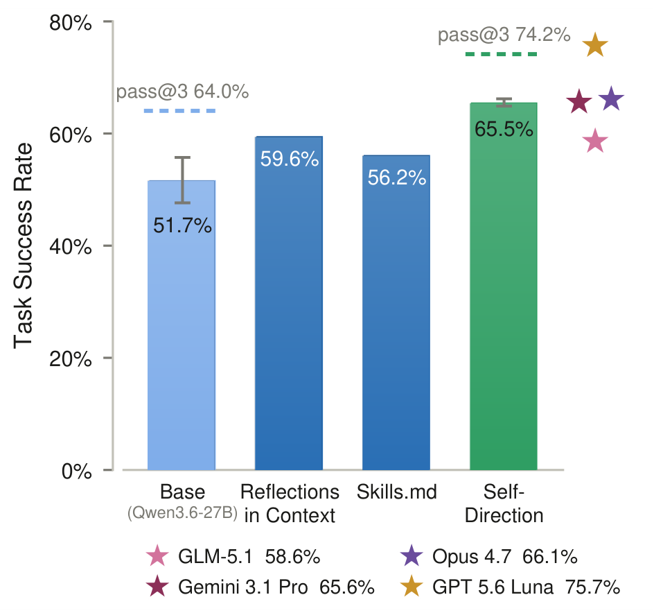
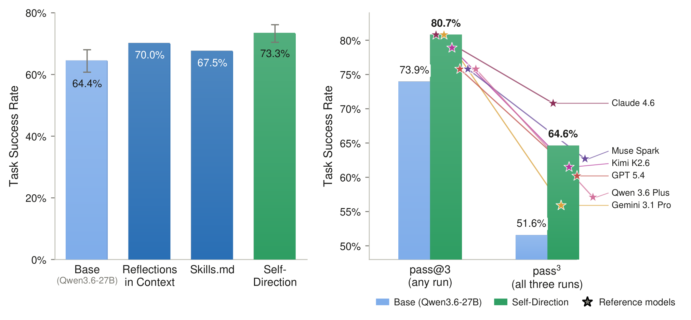
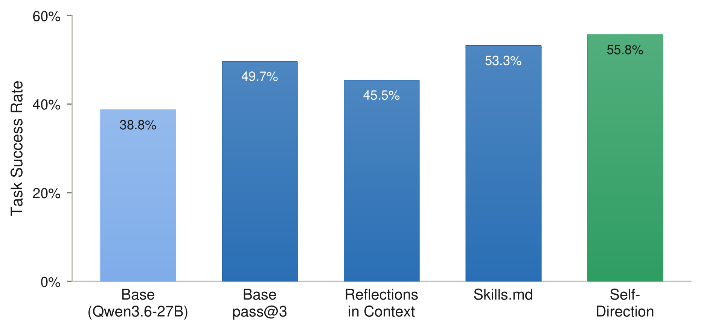
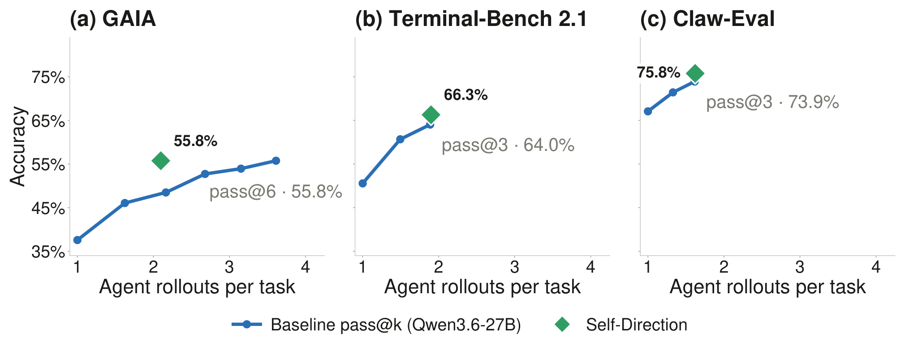

3.1Paper §4.1
Repairs mistakes across task types
Over three runs, Self-Direction raises mean success on Claw-Eval from 64.4% to 73.3% and on Terminal-Bench 2.1 from 51.7% to 65.5%; on GAIA the gain is 17.0 points. It beats in-context reflections and a Skills.md file, matches the base agent's pass@6 on GAIA with only 2.10 rollouts per task, and narrows the gap to frontier agents. MiniWoB++ browser tasks improve as well, from 42% to 54%.
- Terminal-Bench 2.151.7% → 65.5%
- +13.8 pp
- Claw-Eval64.4% → 73.3%
- +8.9 pp
- GAIA38.8% → 55.8%
- +17.0 pp



